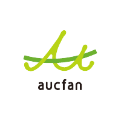

e Business Labo Personal
物販事業設計説明会
上場企業が提供する
250社の非公開仕入れルートで勝つ
2026.5.8（金）20:00〜 / Zoomオンライン / 参加費無料

Powered by aucfan group
本日の説明会について
今日は「ビジネスの説明会」です。
EBLパーソナルというサービスの内容をご説明します
最後に、ご入会をご検討いただく時間をお取りします
本気で収入を変えたい方のために設計された説明会です
参加時のルール
着席して集中できる環境でお聞きください
講義中のマイクはミュートでお願いいたします
チャットでの質問は大歓迎です
この説明会が終わる頃には、「自分はどうするか」を決められる状態になっています
登壇者紹介
渡邉 泰三
株式会社ピュアネス 代表取締役
e Business Laboは、上場企業オークファングループが運営する物販特化型のビジネスコミュニティです。

母体について
株式会社オークファン
日本最大級の落札相場データベースを軸にした会社です。
上場区分
東証グロース上場
落札相場データ
以上
会員数
以上
ヤフオクの落札データを起点に、物販事業者・買取事業者・卸事業者向けのサービスを展開。
設立 2007年6月／代表 武永修一／所在地 東京都品川区
─ なぜ、今日ここにいるのか
あなたがここにいる理由
ヤフオクで仕入れたい
メルカリで売買経験あり
買取アプリで売却経験あり
そういった経験を持って、オークファンにたどり着かれた方が多いはずです。
多くの方が、通ってきた道。「中古一点もの」を扱った経験。
今日の説明会は、そこから先の話です。
ヤフオクでも、メルカリでも、1〜2日でやめたこと、ありませんか？
【1日目】リサーチしても、商品が見つからない
同じ案件を狙う出品者が何百人もいる。買い負けて、1個も仕入れられない。
【2日目】それでも、見つからない
価格と需要の両方が成立する商品が、なかなか出てこない。リサーチ時間だけが消える。
【気づいたら】もう、やっていない
忙しさに紛れて、いつの間にかPCを開かなくなる。これが一番多い終わり方。
頑張りが足りなかった話ではありません。構造の問題です。
中古商材で挫折する、3つの構造
見つかりづらい壁
利益商品は埋もれていて、探す時間が成果に繋がりにくい
再現性の壁
一点ものが中心で、同じ商品が二度と手に入らない
スケールの壁
売上を伸ばすほど、時間と労力が比例して増えていく
これは"中古一点もの単発"の構造的な天井です。
月10〜30万で頭打ち。単価で50〜100万行ける人もいる。
それでも、共通するのはリサーチが永続すること。
月の売上
50〜100万（上振れ）
10〜30万（中心）
ここで止まる
投下できる時間 →
1個探して、
1個売る。
リサーチに使える"あなたの時間"が、そのまま売上の上限になる。
単価を上げれば50〜100万まで届く方もいる。けれど、リサーチは止まらない。
理由はシンプルです。中古一点もの＝再現性が少ない。1個売ったら、また1から探す。翌日、同じ商品はもう存在しない。
単発を、卒業する。
「1個」を仕入れるのか、「ロット」を仕入れるのか。
ヤフオク単発（フロー型）
1個のリサーチ
→ 1個の利益
ロット仕入れ（ストック型）
1個のリサーチ
→ 100個分の利益
これが「フロー型からストック型へ」の正体です。
ロットに変えると、3つの変化。
「1個 → ロット」に切り替えた瞬間に、見える景色が変わります。
利益率は下がる。けど
回転が
10倍・100倍
仕入れに
融資という
選択肢
自己資金の壁を超え
規模が見える
中古一点ものは、利益率は高い。けれど。
① STRENGTH
利益率は、高い。
② CONSTRAINT
1点もの＝再現性が少ない
③ CONSTRAINT
検品・撮影・出品に
時間が消える
④ CONSTRAINT
月商の天井が、低い。
規模を持たせる設計には、乗りにくい構造。
02-c ─ 商品を変えるという選択
「新品＝薄利」は、誤解。
STEP 1
売上が、立つ。
STEP 2
融資が、引ける。
STEP 3
融資 ＝
事業性の証明。
中古一点ものでは、この絵に乗りづらい。
※ 中古ビジネスを否定するわけではない。事業全体としての選択の話。
ロット仕入れに必要なのは、メーカー直取引
← 上流ほど、安く・安定して仕入れられる
個人がメーカー直取引でぶつかる、2つの壁：
信頼の壁
実績のない個人と、メーカーは取引したがらない
リソースの壁
商談・開拓・交渉に、時間とコストが消える
もし、すでに信頼構築済みの
250社以上のメーカー・問屋と
取引できたら？
250社の非公開仕入れルートとは？
「非公開」の意味は3つあります。
一般には公開されていない
外部に出品ルートや卸条件を公開しない
EBL会員限定でアクセスできる
誰でも使えるわけではない
競合に知られていない商品
他のAmazon販売者と被りにくい
つまり、このルートを持っているだけで、価格競争とは別次元に立てる。
Answer
それを可能にしたのが
上場企業オークファングループです
グループ傘下にOSR（大阪船場流通マート）を持ち、国内メーカー商談会を開催
現在250社の国内メーカー・問屋と提携。卸先は大手ドラッグストアなど
上場企業だから、メーカーが信頼して取引する。8年間かけて構築された250社以上のインフラ。
巷のビジネススクールや個人コンサルでは、この仕組みは構築できません。上場企業のグループ会社だからこそ可能なインフラです。
スペシャルゲスト
みずきさん
現役プレイヤー / 三足のわらじを履くシンパパ
本業/副業/育児の3足のわらじを履く現役プレイヤー
限られた時間で成果を出すため、極限まで効率化した仕入れを実現
仕入れ効率化と再現性の追求に日々注力
非公開メーカー2社のみで販売した結果（2026年1月実績）
月利益 74.5万円 利益率 38.9%

販売数
1,479 コ売上金額
1,915,293 円利益額
745,951 円非公開メーカー2社のみで販売した結果（2026年2月実績）
月利益 73.2万円 利益率 41.90%
販売数
1,322 コ売上金額
1,742,575 円利益額
732,860 円非公開メーカー2社のみで販売した結果（2026年3月実績）
月利益 109.9万円 利益率 29.40%
販売数
2,705 コ売上金額
3,742,533 円利益額
1,099,339 円実際の企業リストを
画面共有しながらお見せします
250社以上のメーカー・問屋との取引ネットワーク
反響を呼びすぎてYouTubeから削除された
伝説の動画
OSR商談会の現場で、実際に仕入れをした記録です。
その衝撃的な内容を、スクリーンショットでお見せします。
伝説の動画より
商談会の現場で目玉商品を発見

段ボールに大量の商品。これだけの種類が問屋から直接手に入る環境がOSRです。
伝説の動画より ─ 商品1
ちいかわシール

Amazon 1,750円 / 仕入れ 273円 → 1個あたり利益 900円
伝説の動画より ─ 商品2
ちいかわ ボンボンドロップシール

2,300個仕入れ → 見込み利益 126万7,300円
伝説の動画より ─ 商品3
スティッチのマスコット
22個仕入れ → 見込み利益 9,658円
伝説の動画より ─ 商品4
Mezzo Piano ベリエちゃん
9個仕入れ → 見込み利益 8,451円
伝説の動画より
そして、この日の合計は──

ただし、ここで一つ大きな壁があります
Amazon販売を実務で動かす上で、必ず直面する問題があります。
Amazonの出品規制
商談会は大阪で月5日間のみ
250社のインフラがあっても、ハードルはある
請求書 × 完全オンライン
Amazon出品規制を、
まるごと解除する仕組み
Amazonの出品規制を解除し、
扱える商品カテゴリを広げる仕組み。
出品規制解除サポートの3つの機能
請求書でAmazonの出品規制を解除
Amazonの出品規制という実務上の壁を、プロが間に入って解除する仕組み
扱える商品カテゴリが一気に広がる
出品規制が解除されるほど、販売できる商品カテゴリが増える
完全オンラインで仕入れ完結
大阪に行く必要なし。パソコン1台でどこからでも
出品規制解除の流れ
STEP 01
商品を選ぶ
プロが選定した商品リストから
STEP 02
規制解除申請
仕入れた商品の請求書で申請
STEP 03
出品規制解除！
扱える商品カテゴリが広がる
出品規制が解除されれば、扱える商品の幅が一気に広がる。
ここがパーソナル生の強みです。
BOSS DIRECT 2026年1〜3月実績
これだけの規模で出品規制解除が進んでいます
商品卸個数
32,523個卸金額
2,919万円たった3ヶ月で、32,000個以上の商品が会員の手元に届いています。
ここまでが「何ができる環境か」の話。
次は「その環境を経営者としてどう使うか」に進みます。
中古一点ものの延長線では、
これからお話しする設計図には乗りづらい。
HOWだけでは、
事業は続きません。
ここまでの話を、すごい仕組みだと感じたかもしれません。
でも、仕組みは「武器」であって、「設計図」ではない。
経営者として、先を見据えてどう設計するか。
単発 → ロット → 融資
経営者は、利益率より「回転とレバレッジ」を設計する。
STEP 1
1個仕入れ
自己資金の範囲
時間が天井
STEP 2
ロット仕入れ
売上が安定
銀行から"事業"に見える
STEP 3
融資
融資の選択肢が
現実的に乗ってくる
融資が出る ＝ 銀行が「事業として再現性が認められた」と判断した証拠。
事業性の証明
これまで
自己資金
これから
銀行のお金
これが、経営者の発想。
3年目の、消費税の壁。
1年目・2年目
原則 免税
基準期間がないため、消費税を納めなくてよい。
3年目
課税判定が始まる
1年目の年商が1,000万円超 → 課税事業者へ。
※年商規模・特定期間（前年1〜6月の課税売上高と給与額）の判定で扱いは変わります。インボイス登録は登録時点から強制課税。
気づいた時には、課税事業者。
打ち手は、輸出を組み合わせること
国内物販
消費税を
「預かる」側
輸出事業
仕入れにかかる
消費税10%が還付
3年目の税金と輸出事業を、最初から重ねて設計する。
1本柱から、3本柱へ
私が10年、物販の現場を見てきて辿り着いた答えです。
1本柱
1回の規約変更・市場変化で、売上ゼロ。
3本柱
1本折れても、食いつなげる。
私の経験では、5年・10年続いている事業者の多くは、複数の柱を持っています。
ここまで聞いて、こう思いませんか？
「環境も、設計の話もわかった。
でも、自分にできるのか？」
── ここからが、本当に大事な話です。
物販スクール業界全体の、
残酷な現実を知っていますか？
物販スクール業界全体のアンケート結果
業界全体を対象にした第三者調査（出典：物販総合研究所 2024年1月）
実際に稼げた人
わずか3人に1人（33%）
「環境だけ渡されて続かなかった」と感じた人
5人に1人（20%）
なぜ、こんなことが起きるのか？
「環境」だけ渡して、「あなた」を見ていないから
一人ひとり、状況はまったく違うのに──
目的
事業の柱として / 本業として
使える時間
1時間 or 8時間
資金
10万円 or 100万円
それなのに──
全員に同じカリキュラムを渡して、「あとは頑張ってください」。
だから、3人に2人が脱落する。
EBLには最高のインフラがある。でも──
「環境はあるけど、自分に合った商品の選び方がわからない」
「メーカーとの取引ルートはあるけど、何から始めればいいか迷う」
「一人で進めていると、途中で立ち止まってしまう」
インフラだけでは、足りなかった。
だからこそ、次の一手を打ちました。
それが、EBLパーソナルです
一人ひとり、環境が違う。状況が違う。目標も違う。
あなたの状況に合わせて、あなただけのプランを作る。
メーカー仕入れは最強の選択肢のひとつ。
でも、それが全員に合うとは限らない。
物販にはさまざまなビジネスモデルがあります。
メーカー仕入れ
店舗せどり
中国輸入
定点観測物販
EBLパーソナルなら、あなたの状況に合ったモデルを一緒に選べます。
資金・時間・経験に応じて、最適な道を一緒に見つける。それがパーソナルの強みです。
EBLパーソナルのトレーナー
あなたに合った専門トレーナーがいます
異なる専門性を持つトレーナーが、同じコミュニティに在籍しています。
これだけ多様な専門トレーナーが同じコミュニティにいる。EBLパーソナルだけの環境です。

パーソナルジムと同じです
ジムに行くとき、最初に何をしますか？
まず、あなたの体を見る。
何を鍛えたいのか。どこが弱いのか。どんな生活をしているのか。
それを見た上で、あなたに最適なトレーナーをつける。
EBLパーソナルも同じ。あなたに合ったビジネスモデルを選び、そのモデルに精通したトレーナーを配置する。
しかも、トレーナーは交代できる
同じ金額の中で、担当トレーナーを変更できます。
モデル変更
メーカー仕入れ→店舗せどり
交代OK
ステージ変更
副業→本業に切替
交代OK
相性が合わない
トレーナーとの相性
追加料金なし
こんなビジネススクールは、他に存在しません。
インフラ × パーソナル ＝ EBLパーソナル
EBLパーソナルの具体的内容
あなた専用のビジネスカルテを作成
STEP 01
状況ヒアリング
STEP 02
ビジネスモデル作成
STEP 03
指導案の作成
STEP 04
行動指標の作成
あなたの状況に最も合った専属トレーナーをアテンドします。
こんな方にEBLパーソナルはおすすめです
当てはまるものにチェックしてみてください。
ヤフオク・メルカリで仕入れようとして、続かなかった
中古一点もので、リサーチに時間が取られすぎていると感じる
単発からロット仕入れに移行したい／融資を引きやすい状態を作りたい
3年後の税金・3本柱の設計まで含めて、伴走してほしい
1つでも当てはまるなら、パーソナルがあなたの答えになるはずです。
物販の成功は、ノウハウ20%・マインド80%
目の前の1個を見るのか、
5年後の事業を見るのか。
これらはすべて「今の作業」ではなく、「未来の設計」の話です。
EBLパーソナルが提供するのは、HOWだけではない。
経営者としての設計を、一緒に考える伴走者です。
一般的なコンサルの価格、知っていますか？
情報商材
1-20万円高額スクール
30-80万円個別コンサル
50-200万円しかも、期間が終われば終了。サポートも環境も途切れる。
e Business Labo パーソナル
EBLパーソナルの価格
月額
入会金（初回のみ）
10万円
半年継続で
月額 4万円
1年継続で
月額 3万円
なぜ、この価格で提供できるのか？
「稼げるなら自分でやればいいじゃないですか」
──よく聞かれます。正直に答えます。
理由は、スケールメリットです。
仲間が増えれば仕入れロットが大きくなる。コストが下がり、全員の利益率が上がる。
あなたが稼ぐことが、コミュニティ全体の力になる。

これが、我々の描く未来
一人で戦う時代は、もう終わりました。
仲間と一緒に仕入れて、一緒に成長して、一緒に稼ぎ続ける。
EBLパーソナルは、あなたの一生涯のパートナーです。
EBLパーソナルの募集枠について
現EBLパーソナル生
15名サポート体制見直し
今回の上限
今回の追加募集
12名のみなぜ27名上限なのか
サポート体制を見直し、一人ひとりに割く時間を担保できる範囲を再設計したため。
現在の状況
すでに複数名のお申し込みが入っています。
12名の枠が埋まり次第、募集は即停止します。
枠が埋まる可能性はあります。それでも──
今すぐ決断するのは難しい方へ、
相談の時間を特別に設けました。
30分の個別相談で、あなたの進め方を一緒に考えます。
無料パーソナル診断
渡邉・瑞稀が1対1であなたの状況を診断します。
渡邉 泰三
瑞稀
あなたの目標・資金・使える時間をヒアリング
あなたに最適なビジネスモデルをその場でご提案
今後やるべきことが明確になる → もう迷わない
今日は、2つの選択肢があります。
①
入会
追加募集12名の枠を、その場で確保
- 本日中の申込で、追加募集12名の枠を確保
- 12名で枠が埋まり次第、即募集停止
②
30分のパーソナル診断
渡邉・瑞稀が1対1で個別に確認
- 後日30分の個別ヒアリング
- 診断中に12名枠が埋まる可能性あり
今から数分間、申込みの時間を取ります
①
入会（追加募集枠）
12名のみ・先着順
②

30分のパーソナル診断
入会検討者のみ対象
お申込みはQRコード or Zoomチャットの LINEリンクから
「いつかやろう」の「いつか」は来ません。今日がその日です。
本日はご参加いただきありがとうございます
渡邉 泰三
瑞稀
本日ご参加いただいたお礼に…説明会参加特典もお渡しします！
参加特典はこちらから
QRコードを読み取ってお受け取りください
それでは、質疑応答に入ります。
気になることがあれば、チャットで何でも聞いてください。
SPECIAL ANNOUNCEMENT
本日ご参加の皆さまへ、
特別なご案内です。
5月末、大阪で
EBL × OSR 2Daysイベントを開催します。
現地でしか得られない、業者間取引の"生きた情報"と、メーカー・問屋との商談の場を用意しました。本気で来ていただきたいので、お知らせします。
DAY 1 ─ 5/31（日）
オリエンテーション
セミナー＋無料商談会
DAY 2 ─ 6/1（月）
オリエンテーション＋
商談会＋懇親会
登壇者：EBL渡邉 ／ EC顧問 みずき ／ OSR尾崎 ／ バズフォト ほか
次のスライドで、詳細と申込方法をご案内します。
大阪 2Days 詳細スケジュール
DAY 1 ─ 5/31（日）
| 10:30〜 | 開場（途中入退出可） |
| 13:00〜15:00 | オリエンテーションセミナー |
| 15:00〜 | 無料商談会アテンド |
| 〜16:30 | 終了 |
DAY 2 ─ 6/1（月）
| 10:30〜12:30 | オリエンテーション |
| 13:30〜16:00 | 商談会アテンド |
| 18:00〜20:30 | 懇親会（会場別途） |
VENUE ─ 集合場所
船場センタービル 5号館 2階
大阪市中央区船場中央2丁目2番
DAY1セミナー：12:45開場 / 13:00開始
DAY2オリエンテーション：10:00〜10:15開場
参加申し込み
forms.gle/T1ADqzEqe8ZbxTWk8
現地でお会いできるのを楽しみにしています。
質疑応答
チャットで何でも聞いてください。
入会申し込み
パーソナル診断
説明会参加特典